1과목: 수처리공정
1. 용적이 400m3인 플럭형성지에서 소요동력이 500 Nㆍm/s이고 유체의 점성계수가 1.1×10-3 Nㆍs/m2일 때, 속도경사(G, s-1)는 약 얼마인가?
2. 폴리염화알루미늄(PACl)에 관한 설명으로 옳지 않은 것은?
3. 침전공정을 관리하는데 요구되는 항목으로 옳은 것을 모두 고른 것은?
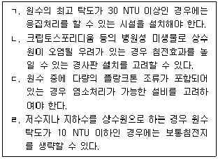
4. 급속여과지 하부집수장치의 역할에 관한 설명으로 옳지 않은 것은?
5. 여과층의 세척이 불충분할 경우 나타나는 현상이 아닌 것은?
6. 여과지 성능을 평가하는데 사용되는 지표가 아닌 것은?
7. 다층여과지가 모래단층여과지에 비해 가지는 장점이 아닌 것은?
8. 급속여과지 역세척에 관한 설명으로 옳지 않은 것은?
9. 소독제 효율을 높이기 위한 정수지 구조에 관한 설명으로 옳지 않은 것은? (단, 정수지는 정사각형 또는 장방형의 형태를 가정한다.)
10. 염소제 저장설비에 관한 설명으로 옳은 것은?
11. 염소 소독제에 관한 설명으로 옳지 않은 것은?
12. 수인성 질병의 원인 미생물 중 원생동물을 모두 고른 것은?
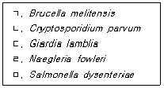
13. 유량이 2,000 m3/h이고, 염소요구농도가 4 mg/L일 때, 잔류염소농도를 0.5 mg/L로 유지하기 위해 필요한 염소주입량(kg/d)은?
14. 전염소처리에 관한 설명으로 옳은 것은?
15. 5대의 탈수기(여과면적: 5 m2/대)를 1일 8시간 가동하여 30,000 kg-D.S./d의 슬러지를 처리한다. 이 때 여과농도(kg-D.S./m2ㆍh)는?
16. 고분자응집보조제 등을 슬러지에 첨가하여 회전드럼 내에서 회전시키면서 슬러지 입자를 응집시키고, 입자간의 수분을 중력으로 드럼 외부로 배출시키는 탈수기는?
17. 폭기 처리를 통해 제거할 수 있는 것은?
18. 자외선 소독에 관한 설명으로 옳지 않은 것은?
19. 오존처리에 관한 설명으로 옳지 않은 것은?
20. 수중의 미량 물질에 관한 설명으로 옳은 것을 모두 고른 것은?
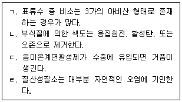
2과목: 수질분석 및 관리
21. 용액의 농도 0.001%(W/V)를 mg/L로 환산한 값은?
22. 먹는물 수질감시항목 운영 등에 관한 고시상 정수에서 심미적 영향물질로 옳지 않은 것은?
23. 먹는물수질공정시험기준상 냄새의 측정방법으로 옳지 않은 것은?
24. 먹는물수질공정시험기준상 관련 용어의 정의로 옳지 않은 것은?
25. 시료 100 mL를 0.002 M 과망간산칼륨용액으로 적정하여 1.1 mL 소비되었다. 정제수를 사용하여 시료와 같은 방법으로 시험할 때 과망간산칼륨용액이 0.1 mL 소비되었다면 시료의 과망간산칼륨 소비량(mg/L)은 얼마인가? (단, 0.002 M 과망간산칼륨용액의 농도계수(f)는 1.0000이다.)
26. 먹는물 수질감시항목 운영 등에 관한 고시상 랑게리아지수(Langelier Index, LI) 결정인자로 옳지 않은 것은?
27. 수처리제의 기준과 규격 및 표시기준상 차아염소산나트륨에 관한 설명으로 옳지 않은 것은?
28. 정수장에서 수질과 연동하여 응집제를 자동으로 투입하려 하는 경우 활용할 수 있는 측정기기로 옳지 않은 것은?
29. 막여과 정수시설의 설치기준상 ( )에 들어갈 내용으로 옳은 것은?
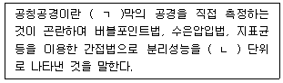
30. 불활성화비 계산방법 및 정수처리 인증 등에 관한 규정상 소독에 의해 요구되는지 아디아 포낭의 불활성화율에 관한 내용이다. 다음 중 옳은 것을 모두 고른 것은?
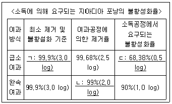
31. 먹는물 수질감시항목 운영 등에 관한 고시상 과불화화합 물(PFCs) 측정방법과 관련하여 옳지 않은 것은?
32. 정수처리기준 운영을 위한 추적자시험에 관한 설명으로 옳지 않은 것은?
33. 상수원관리규칙상 광역 및 지방상수도에서 지하수가 상수원인 경우 원수의 수질 측정 횟수로 옳은 것은?
34. 수도법령상 수도시설의 기술진단에 관한 설명으로 옳은 것은?
35. 수도법상 일반수도사업자가 수도시설의 관리에 관한 교육을 받지 아니하거나 받지 아니하게 한 경우 벌칙 기준으로 옳은 것은?
36. 환경정책기본법령상 약간의 오염물질은 있으나 용존산소가 많은 상태의 다소 좋은 생태계로 여과ㆍ침전ㆍ살균 등 일반적인 정수처리 후 생활용수 또는 수영용수로 사용할 수 있는 상태 등급은?
37. 먹는물 수질기준 및 검사 등에 관한 규칙상 수돗물에서 검사항목 - 수질기준의 연결이 옳은 것을 모두 고른 것은?
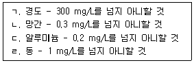
38. 수도법령상 정수장 위생안전인증에 관한 설명으로 옳지 않은 것은?
39. 먹는물 수질기준 및 검사 등에 관한 규칙에서 수도꼭지에서의 검사 중 정수장별 수도관 노후지역의 검사항목으로 옳은 것은?
40. 먹는물 수질기준 및 검사 등에 관한 규칙 및 먹는물수질공정시험기준상 우라늄에 관한 설명으로 옳지 않은 것은?
3과목: 설비운영(기계·장치 또는 계측기 등)
41. 급속혼화시설에서 가압수확산에 의한 혼화에 관한 설명으로 옳은 것은?
42. 응집용 약품주입설비에 관한 설명으로 옳지 않은 것은?
43. 침전지 슬러지의 배출설비에 관한 설명으로 옳은 것을 모두 고른 것은?
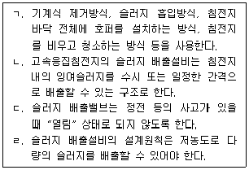
44. 소독설비의 주입제어 중 처리수량과 염소요구량이 변화하는 경우에 잔류염소를 목표치로 설정하고 제어하는 방식은?
45. 상수도설계기준상 액화염소 저장설비에 관한 설명으로 옳지 않은 것은?
46. 여과지 내의 트로프(trough)에 관한 설명으로 옳지 않은 것은?
47. 막여과설비 운전제어방식 중 정유량제어에 관한 설명으로 옳은 것은?
48. 다음 조건에서 캐비테이션 계수(σ)는 얼마인가? (단, 속도수두는 고려하지 않는다.)
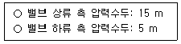
49. 밸브디스크가 힌지(hinge)에 부착되어 지지되고, 그 힌지의 축 주위를 자유롭게 회전하여 개폐작동하는 역류방지용 밸브는?
50. 전력용 콘덴서 내부에서 발생하는 제5고조파를 경감하는 기기는?
51. 변류기의 2차단자간에 접속된 부하가 2차전류에서 소비하는 피상전력은?
52. 변압기 V결선 방식의 이용률(%)은?
53. 비상용 전원설비에 관한 설명으로 옳지 않은 것은?
54. 상수도설계기준상 노이즈에 관한 설명으로 옳지 않은 것은?
55. 제어출력을 내는 제어계의 동작 중 레이트(rate) 동작이라고 하며, 편차의 변화 속도에 비례한 크기의 조작량을 내는 동작은?
56. 상수도시설의 계측제어기기 중 수위, 압력, 수량 및 수질 등의 변화량을 검출하여 신호로 변환하는 장치는?
57. 배수지에서 수질계측항목으로 옳지 않은 것은?
58. 물질안전보건자료 작성항목 및 기재사항 중 공급자정보의 내용으로 옳지 않은 것은?
59. 고압가스안전관리법령상 용어의 정의로 옳은 것은?
60. 산업안전보건법령상 안전보건관리책임자의 업무로 옳지 않은 것은?
4과목: 정수시설 수리학
61. 한계류(critical flow)에 관한 설명으로 옳은 것은?
62. 원형관 내의 흐름상태를 판단하기 위한 레이놀즈 수(Re)의 산출식으로 옳은 것은? (단, R은 경심, D는 관의 직경, V는 유속, μ는 점성계수, ν는 동점성계수, ρ는 밀도이다.)
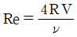
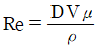
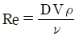
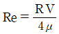
63. Manning 공식을 적용할 때 고려해야 할 인자로 옳지 않은 것은?
64. 계획 정수량 1,000 m3/d인 여과지의 여과면적이 50 m2일 때, 여과속도(m/d)는 얼마인가?
65. 펌프장에서 흡입구의 유속 1.6 m/s, 펌프의 양수량 0.02 m3/s일 때, 토출관의 지름(mm)은 약 얼마인가?
66. 임펠러의 직경이 동일할 때, 펌프의 상사법칙에서 동력(P)과 분당 회전수(N)의 관계식으로 옳은 것은? (단, P1은 N1일 때 동력, P2는 N2일 때 동력이다.)
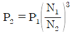
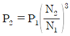
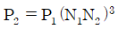
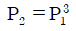
67. 직경 200 mm의 관로가 직경 500 mm로 급확대될 때, 유량이 0.2 m3/s라면 단면 급확대로 인한 손실수두(m)는 약 얼마인가? (단, 중력가속도는 9.8 m/s2이다.)
68. 단위중량의 차원을 [MLT]계로 표시한 것은?
69. 길이 50 m, 폭 10 m, 유효수심 4 m의 제원을 갖는 장방형침전지를 이용하여 정수 처리하고 있다. 물속에 포함된 입자의 침강속도가 2 cm/min인 경우, 입자의 완전 제거를 위한 유량(m3/d)은? (단, 침전입자는 스토크스(Stokes) 법칙이 성립하는 제1형 독립침전을 따른다.)
70. 단위가 없는 물리량을 모두 고른 것은?
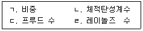
71. 지름 150 cm인 관에 3.0 m/s의 유속으로 물이 가득차서 흐르고 있다. 이 관로의 500 m 구간 마찰손실수두가 8 m일 때 마찰손실계수는 약 얼마인가?
72. 급속여과지에 관한 설명으로 옳은 것은?
73. 효율이 85%, 동력이 500 kW인 펌프를 이용하여 110 m 위의 수조로 물을 양수할 때, 원형관 내 유속이 1.5 m/s라면 계산관경(mm)은 약 얼마인가? (단, 중력가 속도는 9.8 m/s2, 물의 단위중량은 1,000 kgf/m3, 손실수두는 10 m이다.)
74. 직경 200 mm인 원형관에 물이 가득차서 흐를 때 유량(m3/s)은 약 얼마인가? (단, Manning 공식을 따르며 조도계수는 0.012, 동수경사는 0.025이다.)
75. 폭 8 m, 길이 15 m, 유효수심 4 m인 장방형 침전지의 유입유량이 20 m3/min일 때, 이 침전지의 표면부하율(m3/m2/d)은 얼마인가?
76. 물의 성질에 관한 설명으로 옳은 것은?
77. 개수로 흐름에 관한 설명으로 옳은 것은?
78. 직경 200 mm인 원형관에 2 m3/min 유량의 물이 200 m 흐를 때 발생하는 마찰손 실수두(m)는 약 얼마인가? (단, 마찰손실계수는 0.01, 중력가속도는 9.8 m/s2이다.)
79. 그림과 같은 물탱크에서 수심(h)이 4 m인 위치에 작은 오리피스가 설치되어 있다. 이 오리피스에서의 토출유속(m/s)은 약 얼마인가? (단, 오리피스의 유속계수는 0.7, 중력가속도는 9.8 m/s2이다.)
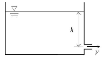
80. 펌프계의 수격작용에 관한 설명으로 옳은 것은?